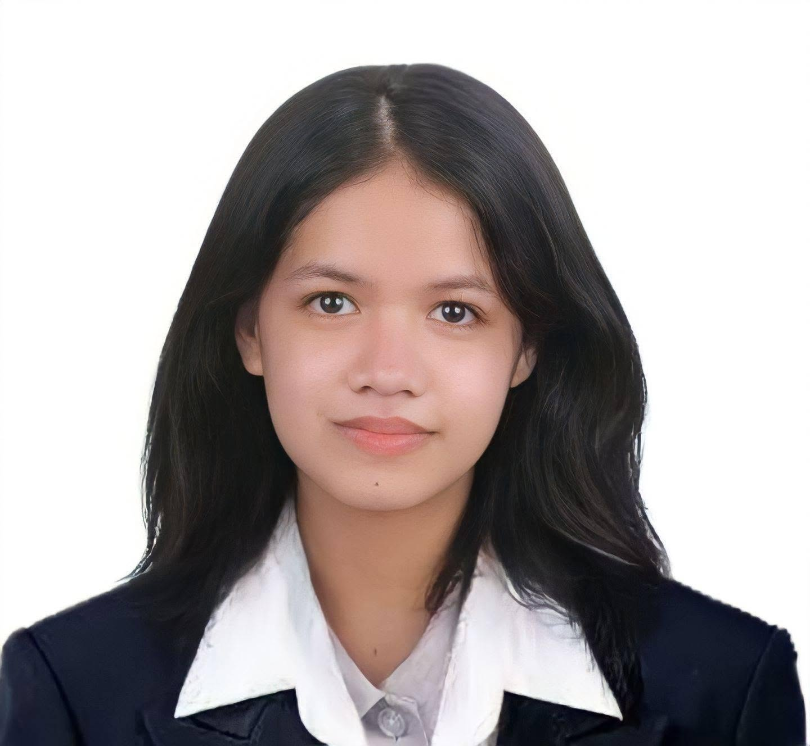

Ella B. Lerasan
Information Systems Professional & Systems Analyst

👨💻 About Me
I am a dedicated Information Systems student who thrives on designing, optimizing, and building systems that directly solve operational complexities. With a strong foundation in database relationships, field documentation, and stakeholder coordination, my goal is to deliver clean, maintainable, and highly effective software platforms.
🚀 Core Projects & Field Experience
Proveya / Jobify
Startup Sundayag 2025 Innovator
A web-based platform targeting employment mismatch and accessibility. Designed to offer structured, fair, and verified job access channels for local job hunters and enterprises alike.

Project Pitching

Award Ceremony
DMW XI Inventory Management System
Government Unit Collaboration
Developed to modernize property asset tracking mechanics at the Department of Migrant Workers Regional Office XI. Features integrated asset assignment mechanisms with instant PAR and ICS reporting.

DMW Regional Office XI
🛠 Technical Capabilities
Systems Analysis & Design
Database Architecture (SQL & ERD)
Python Development
Web Platforms (HTML, CSS, JS)
IEEE Standards Documentation
Agile Development Workflows